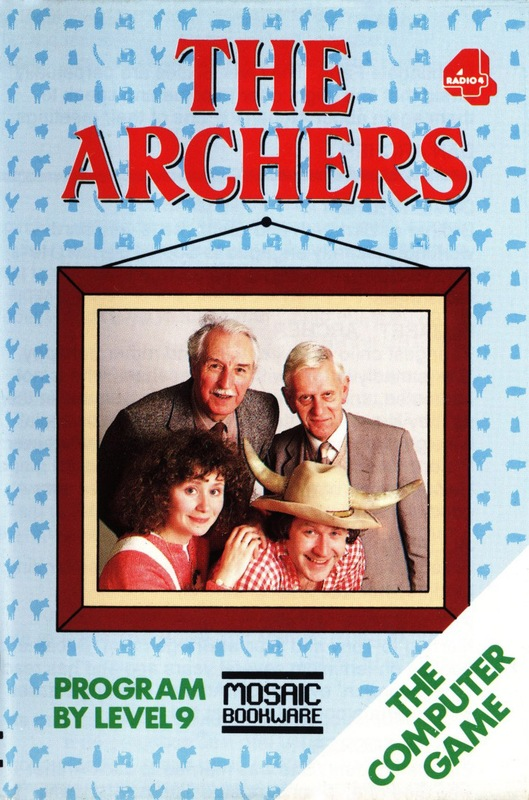
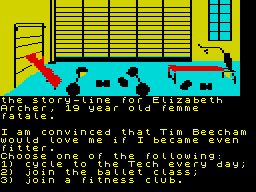

The Archers


{kind=link}

| Publisher: | Mosaic |
| Price: | £9.95 |
| Year: | 1987 |
| Source: | CRASH, Issue 37 |

I’m sorry if my mind strays during this review — you see, I’m trying to listen to the Omnibus Edition of The Archers on Radio 4 while writing this stuff here. It’s difficult to know how to sum up this program if you’re not aware of what it’s all about (and if you are aware of what the program’s about just what kind of boring fa.. fellow are you?).
You could think along the lines ‘eee, isn’t this decadent listening to a load of old rural twaddle that no-one else listens to’, a kind of Oxbridge aloofness and ‘when does the grouse season end’ (or start for that matter)? Alternatively, you could take offence and think ‘isn’t this just typical of BBC Radio 4, the view of Britain which has Americans take the view that this little island here is a floating comedy museum’. And who could disagree? Since, increasingly, Britain’s only future is as a museum all I can say is more power to your elbow and let’s have less of this unsettling alternative comedy (only a vehicle for intellectual malcontents) and more of this Archers stuff — it’s brilliant (and mine’s a rural retreat and a fuel-injected turbo grouse).

Ms Archer’s mind at the moment...
Wait a minute, I’ve just got to adjust these cans (headphones to you). Ah, that’s better and who the heck’s talking now? You see, usually at the start of a scene someone says something really obvious like, ‘Ooooh, Aaaaar, here’rr comes that old raaascal, Jooooe Grrruuuundy, he’s looking rrraaather miserable, pessimistic, and lazy, and I think he’s got a touch of Farmer’s Lung’ and so you know who’s going to speak next, but there’s two characters twittering away at the moment and I haven’t the foggiest who they are.
As I write this, Ambridge is rocking the establishment with really juicy titbits — like Joe Grundy’s American ladyfriend who he’s trying to propose to; Sid Perks, the barman and licensee of The Bull is up to the same sort of thing with... er... someone else (a schoolteacher, I think), and David Archer is thinking of selling his house, or land, or both, or something.
Hey, wait a minute, what’s all this North Ootseera, South Ootseera, I think I’ve fallen off the end of the Archers into a gale warning and now they’re getting stuck into a question from Gardener’s Question time (sorry about the spelling of Ootseera, but it doesn’t exist alongside Tyne and Dogger and must be a figment of Radio 4’s imagination). Well at least I can think straight now without those rural rustics filling my head full of arable silage and food no-one in Europe wants or can afford. I think it’s about time we had a long-running series all about everyday ship-building folk — or is it too late?
Leaving hobbyhorses in the paddock let’s get this one properly introduced. Mosaic released the more commercial-sounding Adrian Mole at the slightly more commercial time of before Christmas last year. In that game you guided Moley around his environs via one of three options, the fourth option offering facilities and help. With The Archers you have exactly the same kind of program so if you are familiar with the Mole game and the Archers radio program, you should know what to expect.
This program could have been terminally dull, as you might suspect, but has been saved by a humorous treatment, good writing, and a concept which I really liked, that of posing as a trainee scriptwriter for the radio programme. The aim of the game is therefore to keep up the audience figures and hope for a record number of listeners, with memos from the Controller of Radio 4 keeping you on the straight and narrow as regards plot lines — people who listen to the Archers are notoriously dull (and the very sort who will be surprised when adverts pop up right in the middle touting for their inherited wealth when everyone else saw it coming a mile off).
As with Mole, the extent that you understand the concept (there it was popularity with peers, here it’s getting the balance between tradition and titillation) will govern how successful you are at playing the game. I think the game is much better than the radio programme. Some of you might well say that isn’t saying an awful lot and I might be tempted to agree.
COMMENTS
| Difficulty: | High on playability |
| Graphics: | Not as surreal as Adrian Mole, pleasantly mainstream |
| Presentation: | Super |
| Input facility: | One of three options |
| Response: | Immediate with type-ahead |
| General rating: | Very good |
| Atmosphere: | 93% |
| Vocabulary: | N/A% |
| Logic: | 92% |
| Addictive quality: | 79% |
| Overall: | 90% |